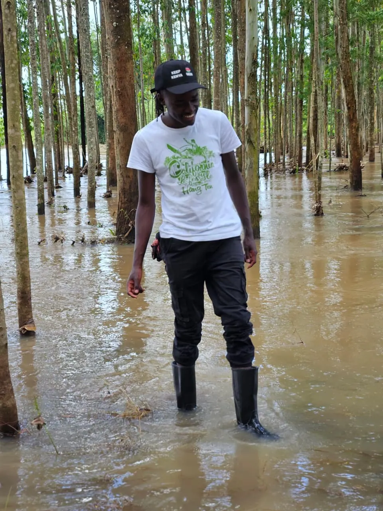
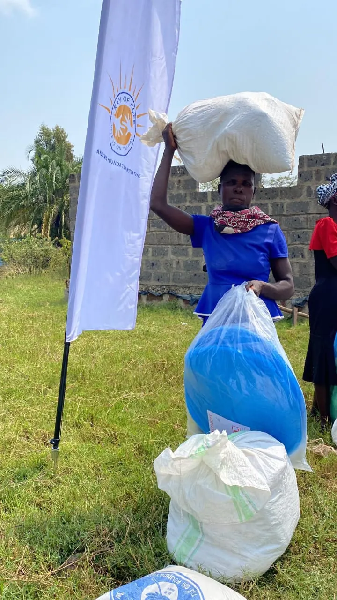
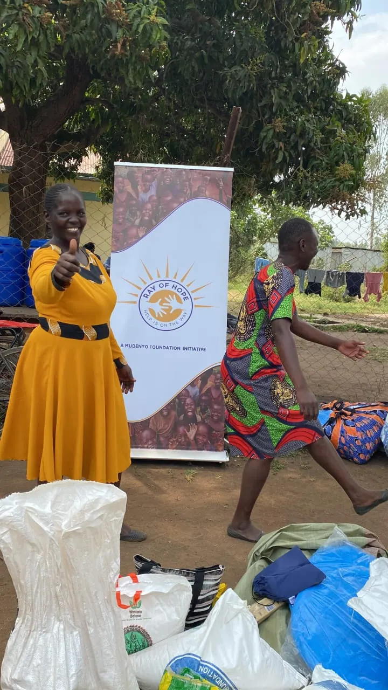
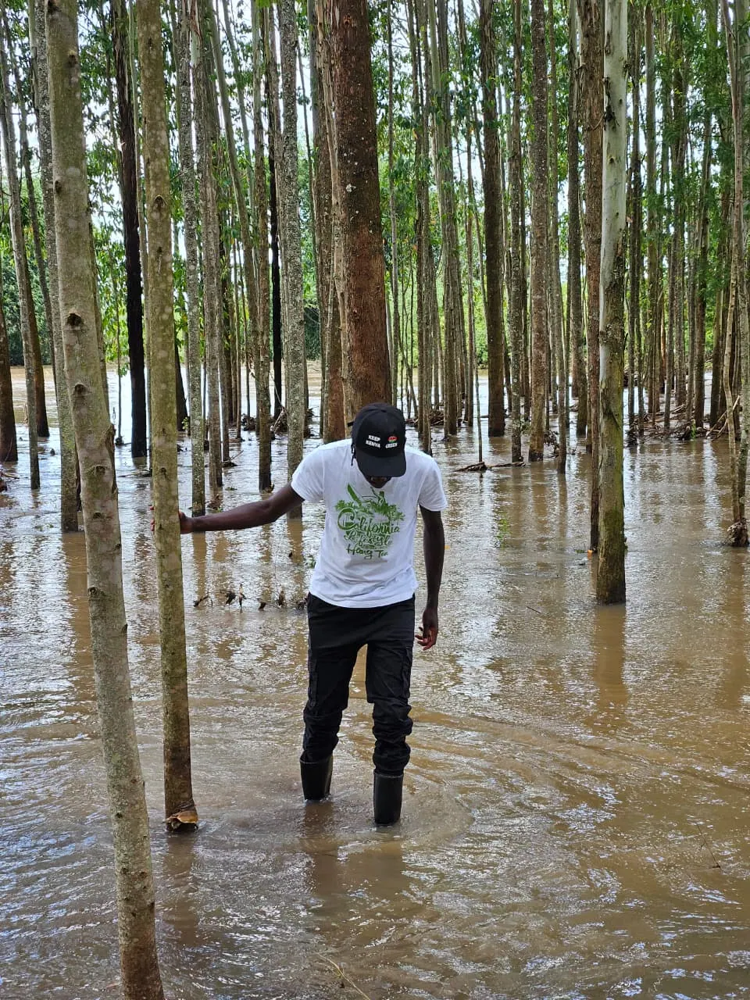
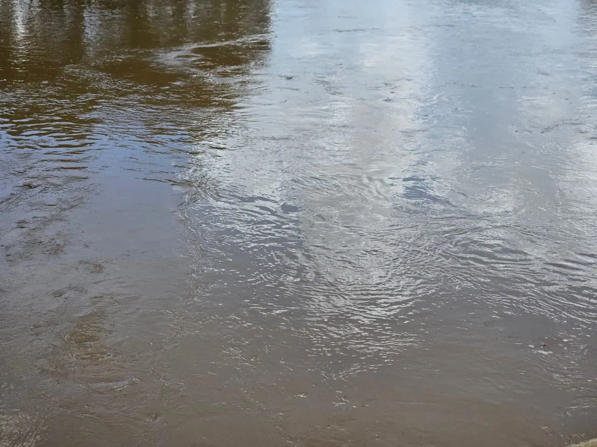

Emergency food response.
When disaster strikes, we mobilise within 48 hours to reach displaced families in Kenya's most vulnerable regions.

Emergency Fund active. Your gift can reach crisis-hit families within 48 hours of a disaster.
Give now48-hour activation.
A structured, fast-moving response framework built on field experience.
Alert and activation
Crisis alert received. Emergency Response team activated. County liaisons contacted.
Assessment
Rapid needs assessment deployed to the affected area. Number of families and severity mapped.
Procurement
Emergency ration packs procured from the nearest depot. Logistics and volunteers mobilised.
Distribution
Food distributed at registered distribution points. Beneficiary data recorded for reporting.
What we distribute.
Each pack is designed to sustain a family of five for 14 days. Packs are assembled in advance and stored at regional depots for immediate deployment.
- 10 kg maize flourStaple energy source
- 5 kg legumesProtein and iron
- 2 L cooking oilHealthy fats and calories
- Iodised saltMineral supplementation
One pack costs approximately KES 2,500 and feeds a family of five for 14 days.

Field responses.
No family should face disaster alone.
Flood response
Heavy rains displaced over 1,200 families along the river in the Sabwani and Namanjalala area.
Flood response
Supporting flood-affected families in Namanjalala.
Drought relief
A prolonged dry spell triggered food insecurity across the county. 800 families received emergency rations over a one-week distribution period.



Build our emergency reserve.
Funds held in the Emergency Reserve are deployed within hours of a crisis alert.